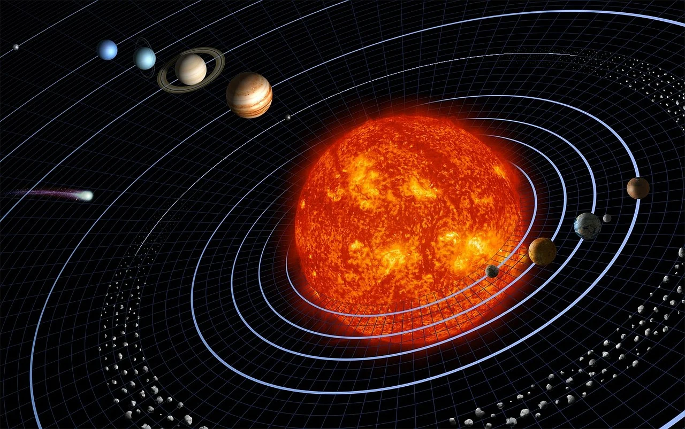

Calea Lactee, este galaxia gazdă a Sistemului Solar și a altor aproximativ 100-400 miliarde de stele cu planetele lor, precum și a peste 1.000 nebuloase. Toate obiectele din galaxie orbitează în jurul centrului de masă al galaxiei, numit și centru galactic.
Cum s-a format Sistemul Solar?
Sistemul solar este format din Soare împreună cu sistemul său planetar care cuprinde opt planete împreună cu sateliții lor naturali și alte obiecte non-stelare.
El s-a format acum 4,6 miliarde de ani, ca urmare a colapsului gravitațional al unui gigant nor molecular. Cel mai masiv obiect este steaua centrală - Soarele, al doilea obiect ca masă fiind planeta Jupiter. Cele patru planete interioare mici, Mercur, Venus, Pământul și Marte, numite planete terestre / planete telurice, sunt compuse în principal din roci și metal. Cele patru planete exterioare, numite giganți gazoși Jupiter, Saturn ,Uranus si Neptun, sunt mult mai masive decât cele telurice si sunt formate in mare parte din gaz.
Cum s-au format planetele?
În urma punctului de fierbere foarte mare, metalele și silicații au putut rezista în interiorul fierbinte al sistemului solar, aproape de Soare, iar acestea au format planetele de rocă precum: Mercur, Venus, Terra și Marte. Giganții gazoși precum: Jupiter, Saturn, Uranus și Neptun au fost formați mai departe de Soare, dincolo de linia de îngheț.
Câte planete se rotesc în jurul Soarelui?
În jurul Soarelui se rotesc 8 planete, 5 planete pitice, 171 de sateliți ai planetelor, sute de mii de asteroizi și mai multe mii de comete.
Câte planete sunt în sistemul solar?
Mercur
Venus
Terra
Marte
Jupiter
Saturn
Uranus
Neptun
Planetele pitice sunt:
Ceres
Pluto
Eris
Makemake
Haumea
Asteroizii se pot găsi în două regiuni, denumite centuri de asteroizi, acolo unde se află Marte și Jupiter, centura principală, iar după Neptun, centura lui Kuiper.